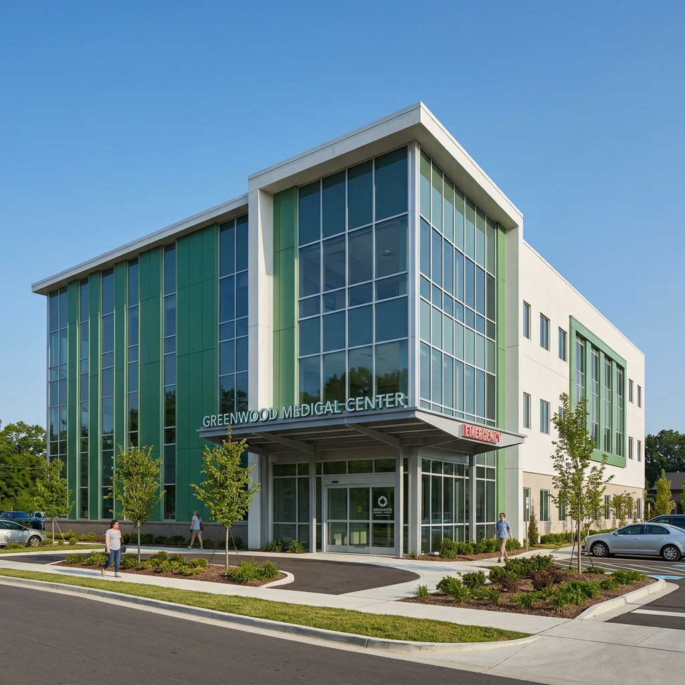
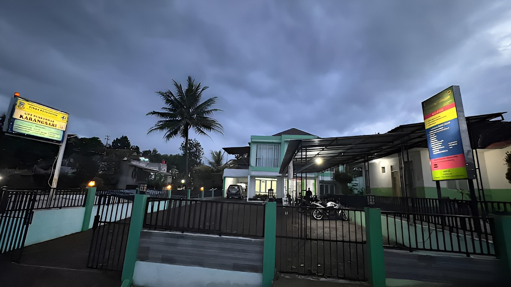

Puskesmas Karangsari merupakan fasilitas kesehatan tingkat pertama (FKTP) di Kabupaten Garut yang memiliki berbagai fasilitas dan ruangan seperti Ruang Pendaftaran, Ruang Tunggu, Ruang Pemeriksaan Umum, Poli Gigi, Poli KIA, Ruang Tindakan, Apotek/Farmasi, serta area pendukung lainnya.
Dengan luas bangunan dan area pelayanan yang mencakup berbagai unit kesehatan, Puskesmas Karangsari dilengkapi dengan media informasi digital Virtual Tour berbasis web dengan tampilan panorama 360 derajat agar masyarakat dapat mengenal lingkungan, fasilitas, dan layanan secara interaktif sebelum datang langsung.
Arah dan komitmen strategis kami dalam melayani kesehatan masyarakat.
Mewujudkan masyarakat Kabupaten Garut yang sehat, mandiri, dan berdaya saing tinggi dalam kualitas hidup.
Memberikan pelayanan kesehatan yang aman, cepat, terjangkau, dan mengutamakan keselamatan pasien.
Mengembangkan potensi dan kompetensi seluruh dokter, perawat, serta tenaga medis secara berkelanjutan.
Meningkatkan kesadaran masyarakat akan pentingnya tindakan preventif dan edukasi pola hidup sehat.
Memperbarui peralatan medis, laboratorium, dan laboratorium pendukung sesuai standar kesehatan terkini.
Prinsip dasar yang diterapkan oleh seluruh staf Puskesmas Karangsari.
Melayani setiap pasien dengan tulus, tanpa membeda-bedakan status sosial maupun latar belakang.
Memberikan kualitas pengobatan dan pelayanan terbaik melebihi standar ekspektasi pasien.
Memahami, mendengarkan, dan merasakan setiap kebutuhan medis serta kenyamanan pasien.
Bertanggung jawab penuh, transparan, dan sesuai standar operasional prosedur medis.
Bagan Struktur Organisasi, Penunjukan Penanggung Jawab, dan Koordinator UPT Puskesmas Karangsari.